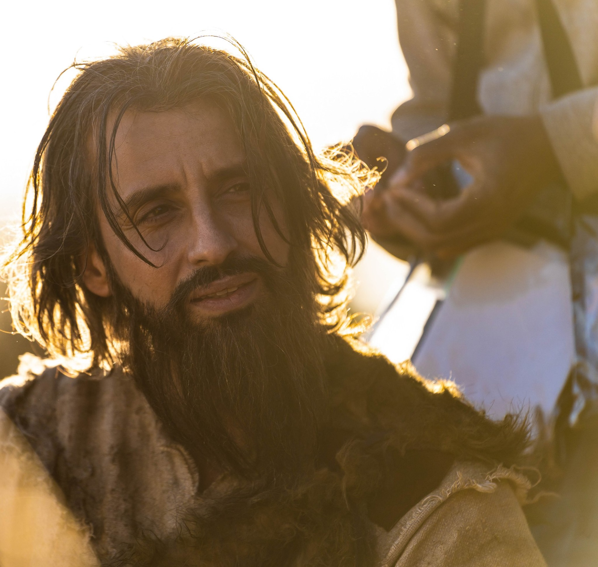
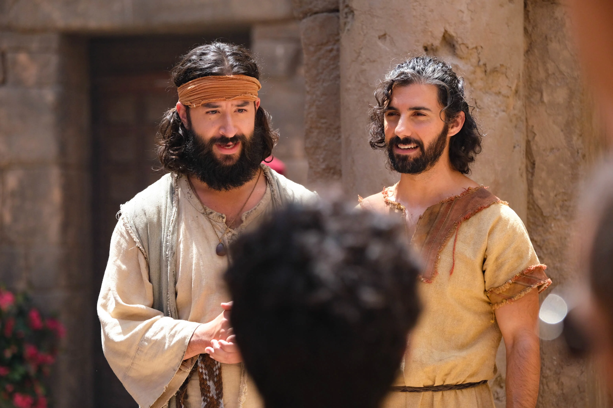
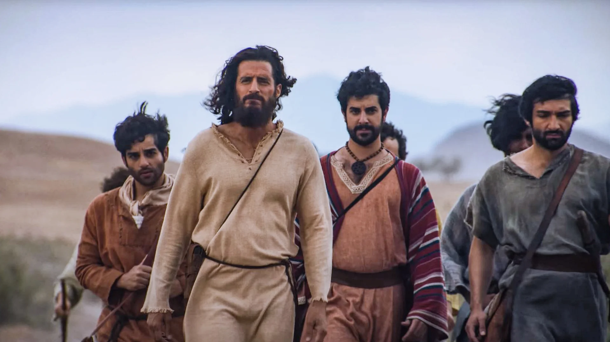
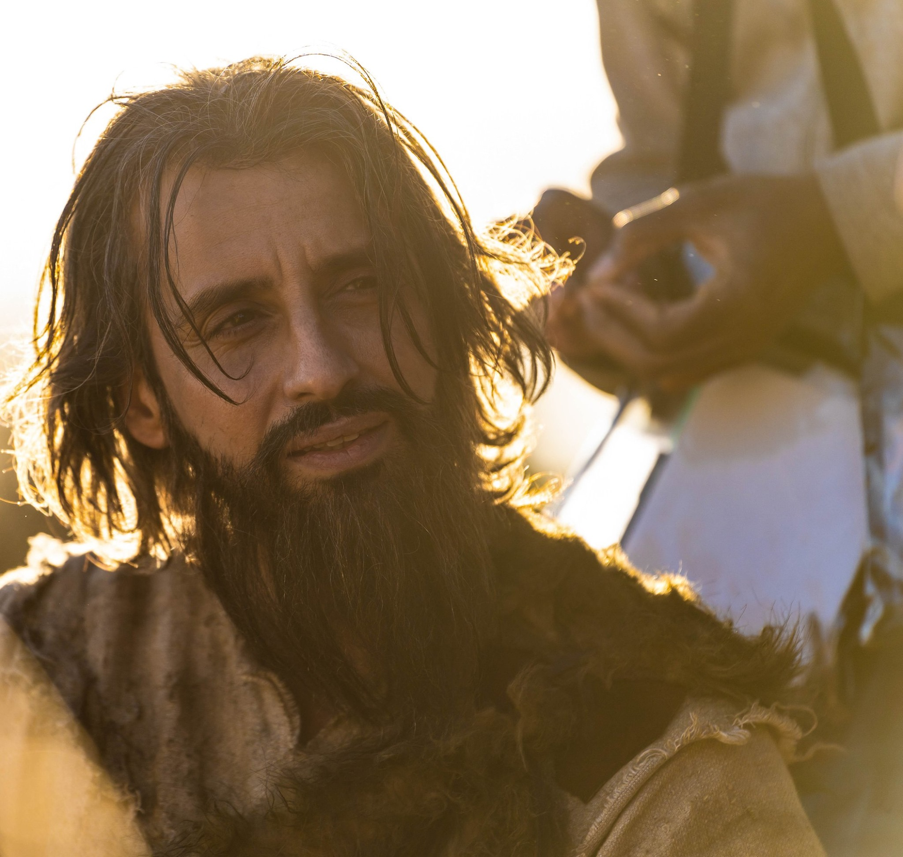
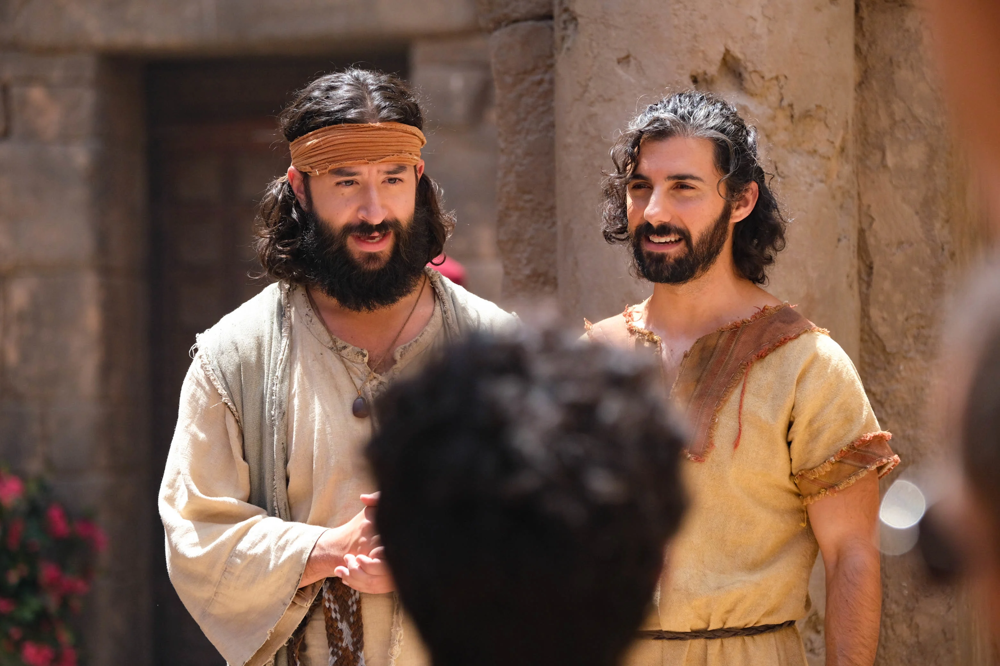
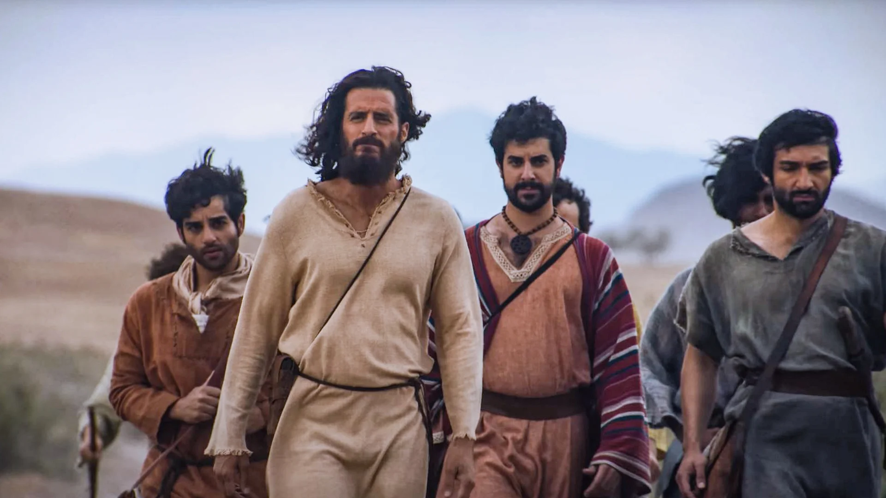

Pedro
Também conhecido como Simão, Simão Pedro ou Cefas (Rocha), Pedro era um líder natural e um porta-voz notório para os doze. O nome de Pedro aparece muito mais no Novo Testamento do que qualquer outro dos discípulos. Ele era o mais velho dos dois irmãos e o único discípulo casado (Lucas 4:38). Sua esposa era conhecida por viajar com ele quando ele estava em missão. (1 Co 9:5) Sua tarefa era levar o Evangelho aos circuncidados (Gl 2:7). Pedro é bem conhecido por negar a Cristo três vezes depois da prisão de Jesus. Posteriormente, na sua prisão, ele pediu para ser crucificado com a cabeça baixa. Pois, ele não se achava digno de ser crucificado da mesma maneira que seu Senhor. Ele morreu como mártir em Roma durante o reinado de Nero. Alguns especulam na mesma época em que Paulo estava sendo decapitado.
André
Um antigo discípulo de João Batista, André e João, o Filho de Zebedeu, estavam presentes quando João Batista disse: “Eis o Cordeiro de Deus!” (João 1:35). André foi o primeiro a seguir Jesus e seu entusiasmo ficou evidente quando seu desejo de apresentar seu irmão mais velho a Jesus revelou o que já estava em seu coração, um profundo amor a Deus. Ele não era uma pessoa tão atuante e visível como seu irmão. No entanto, ele era um pregador apaixonado e compartilhou o evangelho com ousadia e foi um contribuinte significativo para a igreja primitiva. André morreu como mártir. Ele enfrentou a crucificação com ousadia e coragem. Ele disse: “Oh, cruz muito bem-vinda e ansiada! Com uma mente disposta, com alegria e desejo, venho sendo um estudioso dAquele que se pendurou em você, porque sempre fui seu amante e desejo abraçá-lo”.
Tiago Maior
Tiago é o irmão mais velho de João. Ele é parte da equipe tranquila de discípulos, pois não lemos muito sobre ele na Bíblia. Como parte dos “três íntimos” de Jesus, ele estava presente junto com Pedro e João quando Jesus ressuscitou a filha de Jairo (Marcos 5:37). Ele testemunhou a transfiguração de Jesus no Monte das Oliveiras (Mateus 17: 1). E estava no Jardim do Getsêmani com Jesus (Marcos 14:33). Tiago foi o primeiro discípulo a ser martirizado (decapitado) e o único discípulo a ter seu martírio registrado na Bíblia (Atos 12:1-3).
Joao
Conhecido como o “discípulo que Jesus amava”, ele também fazia parte dos três mais próximos (João 3:23). Além disso, ele escreveu uma grande parte do Novo Testamento: o livro de João; 1, 2 e 3 João e o livro de Apocalipse. Ele escreveu mais sobre o amor do que qualquer outro autor do Novo Testamento. Sua proximidade com Jesus ensinou-lhe muito sobre o amor. Domiciano o prendeu na ilha de Patmos. Mas após a morte do imperador, João retornou a Éfeso, onde liderou igrejas na Ásia até sua morte por volta de 100 dC.
Filipi
No dia seguinte, decidiu ir para a Galiléia e encontrou Filipe. E Jesus lhe disse: Segue-me. João 1:43 O que sabemos sobre Filipe? Quase nada. Embora judeu, só o conhecemos pelo nome grego, Filipe. Com um coração para o evangelismo, ele estava ansioso para dizer a Natanael que Aquele predito por Moisés e os profetas havia chegado (João 1:45). Eles eram companheiros íntimos e possivelmente estudaram o Antigo Testamento juntos. Filipe foi apedrejado e crucificado em Hierápolis, Frígia.
Natanael
Também conhecido como Bartolomeu, Natanael veio de Caná da Galiléia (João 21:2). Ele expressou algum preconceito local sobre Nazaré (João 1:46). Jesus reconheceu quão sincero era seu amor por Deus desde o princípio, quando disse: “Eis um verdadeiro israelita, em quem não há engano!” (João 1:47) Natanael pode ter pregado na Índia e traduzido o livro de Mateus para o idioma deles. Ele foi espancado, crucificado e decapitado. Ele morreu como mártir enquanto servia o povo de Albinopolis, Armênia.
Mateus
Levi (Mateus) o filho de Alfeu, era um cobrador de impostos, o grupo mais desprezado em todo Israel. Eles eram conhecidos por receber dinheiro extra do povo de Israel para pagar os romanos e encher seus Mateus levou o evangelho à Etiópia e ao Egito. Hircanus, o rei, o matou com uma lança.
Tomé
Geralmente apelidado de “incrédulo”, Tomé também era chamado de Dídimo, que significa “gêmeo”. No entanto, nenhum irmão ou irmã gêmea de Tomé aparece na Bíblia. A primeira menção de Tomé está em João 11:16. Lázaro havia morrido e os discípulos temiam pela vida de Jesus e deles próprios se voltassem para Betânia. Tomé se pronuncia: “Vamos nós também, para morrermos com ele”. (João 11:16) Aqui vemos a qualidade do caráter de coragem e lealdade a Cristo. Uma qualidade que normalmente não dão a Tomé. Sua devoção a Cristo se demonstra ainda mais quando Jesus disse aos discípulos que Ele iria embora e prepararia um lugar para eles. Tomé não queria ser deixado para trás. E então o amor de Tomé por Jesus e sua declaração sobre seu desejo de ver e tocar antes de crer: “Meu Senhor e Meu Deus!” (João 20:28) A tradição sugere fortemente que Tomé iniciou a igreja cristã na Índia. Alguns sugerem que o mataram de forma irônica atravessando uma lança nele semelhante a Jesus.
Thiago Menor
Ele é filho de Alfeu (Lc 6:15). O nome de sua mãe é Maria (Marcos 15:40) e ele tem um irmão chamado José (Mateus 27:56). Exceto por alguns detalhes sobre sua família, não há mais nada mencionado sobre ele na Bíblia. Talvez seja por isso que ele é chamado de Tiago, o Menor, em Marcos 15:40. O que é importante lembrar é que, embora Tiago estivesse um pouco em segundo plano, ele foi escolhido por Jesus para ser um dos doze discípulos. Além disso, ele foi treinado e usado por Cristo de uma maneira poderosa para promover o Reino de Deus. Ele era, portanto, um membro valioso da equipe. A tradição diz que ele foi crucificado no Sinai ou possivelmente apedrejado até a morte em Jerusalém.
Simão, o Zelote
Simão provavelmente foi um ativista político em sua juventude. Mas, por que Jesus escolheria alguém com essa formação? É incrível que Jesus tenha escolhido um homem como Simão para ser discípulo. Mas ele era um homem de lealdade feroz, paixão incrível, coragem e zelo. Simão acreditou na verdade e abraçou a Cristo como seu Senhor. O entusiasmo ardente que ele uma vez teve por Israel foi agora expresso em sua devoção a Cristo. Há alguma especulação sobre o que aconteceu com Simão. A tradição diz que depois de pregar na costa oeste da África, Simão foi para a Inglaterra onde acabou sendo crucificado em 74 dC.
Judas, filho de Tiago
O décimo primeiro nome na lista de discípulos é Judas. Também conhecido como Tadeu, Judas viveu na obscuridade como um dos Doze. Ele fez uma pergunta a Jesus em João 14:22: Judas parecia muito preocupado com essa pergunta. No entanto, Cristo respondeu dizendo que se revelaria a qualquer um que o amasse. A tradição mais antiga diz que Judas, filho de Tiago, alguns anos depois de Pentecostes, levou o evangelho para o norte, para Edessa. Lá ele curou o rei de Edessa, Abgar. Eusébio, o historiador, disse que os arquivos de Edessa continham a visita de Judas e a cura de Abgar (os registros já foram destruídos). O símbolo tradicional de Judas é um bastão e a tradição diz que o espancaram até a morte por sua fé.
Judas, Iscariotes
O traidor. Nada se sabe sobre o passado de Judas. Seu encontro e chamado por Jesus não está registrado na Bíblia. Ele não era da Galiléia, ou seja, conhecido. Obviamente se tornou um seguidor e ficou com Jesus por três anos. Ele deu a Cristo três anos de sua vida, mas certamente não lhe deu seu coração, e Jesus sabia disso. Judas traiu Jesus por trinta moedas de prata. (Mateus 26:15) Os outros onze apóstolos são todos um grande encorajamento para nós porque exemplificam como pessoas comuns com falhas podem ser usadas por Deus de maneiras incomuns e notáveis. Judas, por outro lado, é uma advertência sobre o potencial maligno do descuido espiritual, oportunidades desperdiçadas, concupiscências pecaminosas e dureza do coração. Aqui estava um homem que se aproximou do Salvador o mais humanamente possível. Ele desfrutou de todos os privilégios que Cristo oferece. Ele estava intimamente familiarizado com tudo o que Jesus ensinava. No entanto, ele permaneceu na incredulidade e entrou em uma eternidade sem esperança.